Cambia un risultato del passato e guarda come si riscrive la storia del campionato.
Nelle immagini, i numeri rossi corrispondono ai numeri nelle spiegazioni.
Appena apri l'app trovi tutti i comandi in alto.
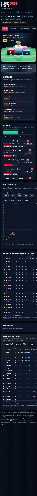
123456È il cuore dell'app. Nella sezione "La schedina" trovi tutte le partite della stagione.
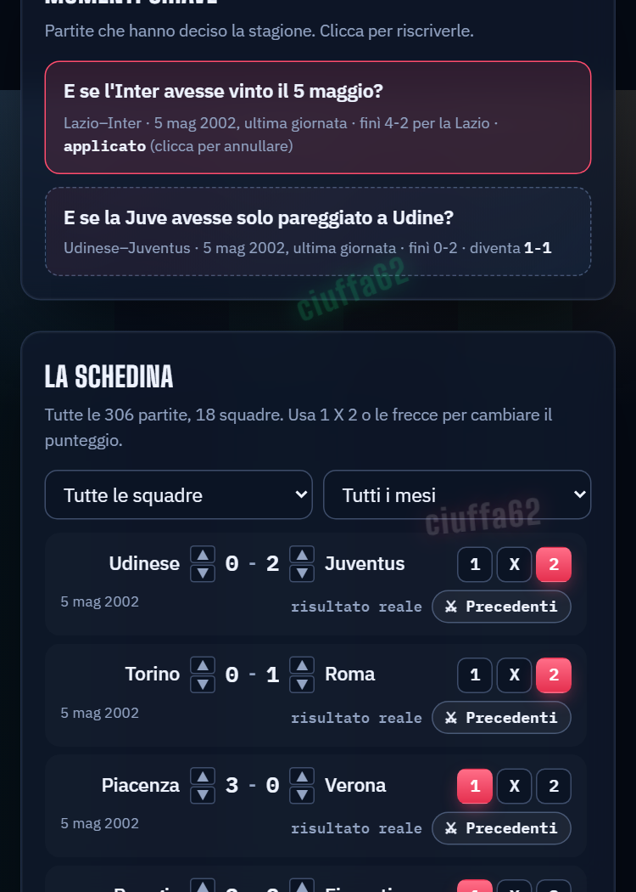
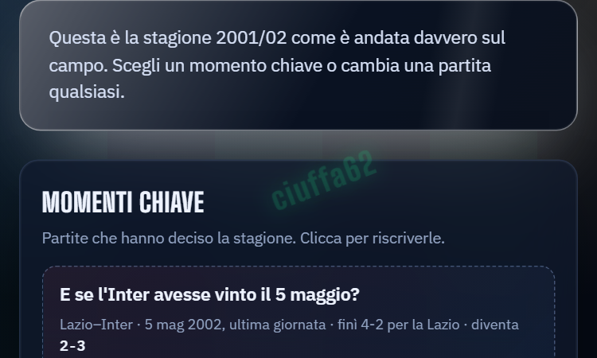
Il tasto ⚔ Precedenti c'è sotto ogni partita (Serie A, schedine, scheda squadra).
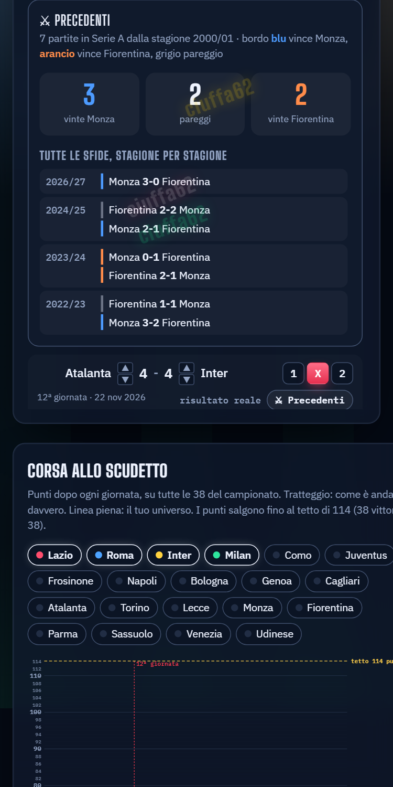
Toccando il nome di una squadra nella classifica si apre una finestra con tutto quello che serve. Si chiude con la ✕ in alto a destra (o toccando fuori).
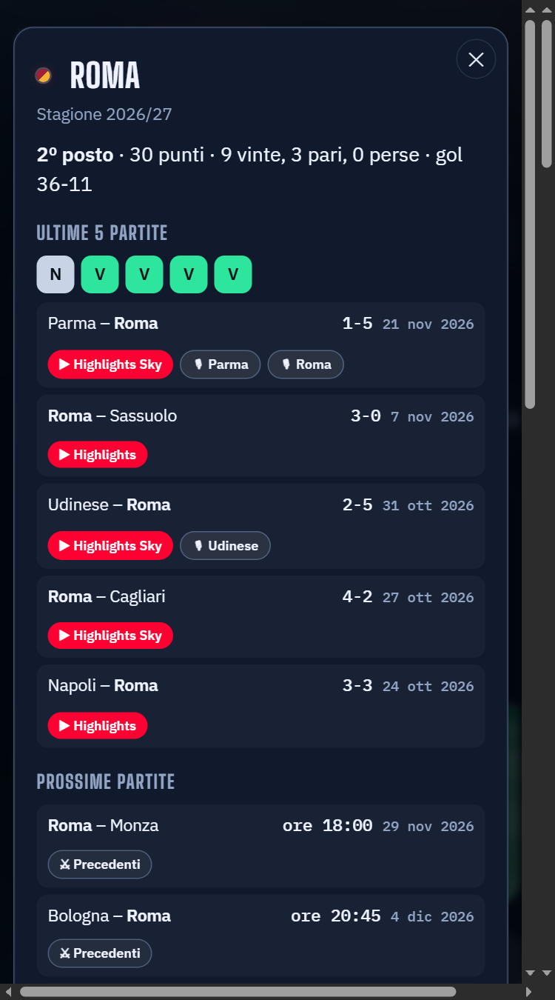
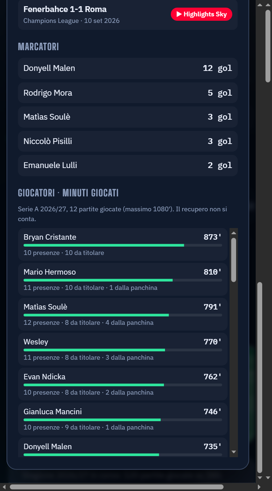
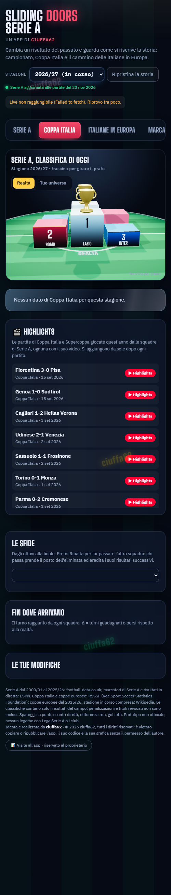
Dagli ottavi alla finale, per ogni stagione disponibile. Il tabellone si ricalcola da solo quando ribalti una sfida.
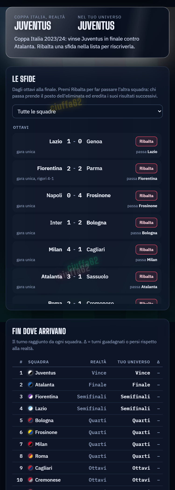
Champions League, Europa League e Conference League: il cammino delle squadre italiane.
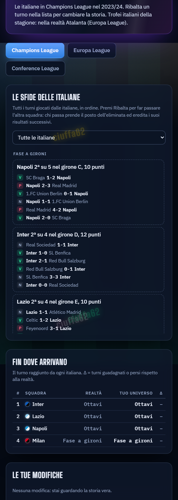
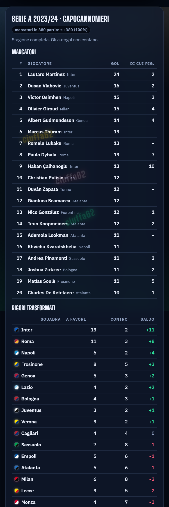
Una schedina è la giornata intera, come al Totocalcio ma senza soldi: si gioca solo per la classifica del gruppo.
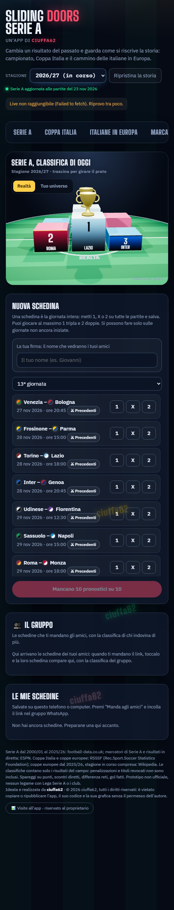
1234Si gioca a indovinare gli undici titolari prima che escano le ufficiali (circa un'ora prima della partita).
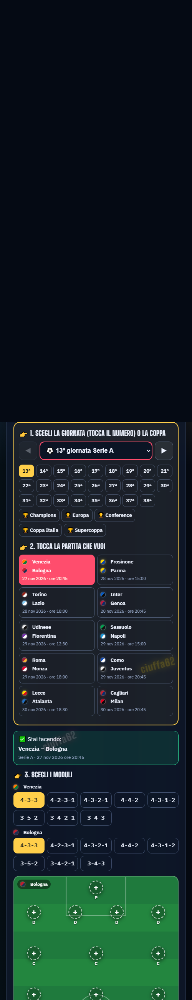
1234Nella stagione in corso l'app controlla da sola i risultati mentre si gioca.
| Le mie modifiche si salvano? | Sì, sul tuo telefono o computer: le modifiche di ogni stagione, i ribaltamenti delle coppe, le schedine e le formazioni. Se cambi dispositivo o cancelli i dati del browser non le ritrovi. In navigazione privata/incognito potrebbe non salvare. |
| Come cancello tutto? | "Ripristina la storia" in alto cancella le modifiche della stagione scelta. Le singole modifiche si annullano dall'elenco "Le tue modifiche". |
| Quanto indietro arriva? | Serie A dal 2000/01. Coppa Italia e coppe europee dagli archivi disponibili (alcune stagioni hanno meno dati). |
| Ogni quanto si aggiorna? | I dati fissi due volte al giorno. I minuti giocati ogni ora. I risultati in diretta ogni pochi minuti durante le partite. |
| Perché la classifica di una stagione non è uguale a quella vera? | Le classifiche contano solo i risultati del campo: penalizzazioni e titoli revocati non sono inclusi (per esempio i punti tolti alla Juventus nel 2022/23). Dove serve c'è una "Nota" nel verdetto. |
| Da dove arrivano i dati? | Risultati: football-data.co.uk. Marcatori, formazioni e diretta: ESPN. Coppe: RSSSF e Wikipedia. Video: Sky Sport e YouTube. |
| Come funziona il simulatore? | Calcola la forza d'attacco e di difesa di ogni squadra dai gol fatti e subiti, e gioca migliaia di volte le partite che mancano. Non è una previsione sicura: è una stima. |
| Costa qualcosa? Serve registrarsi? | No: gratis e senza account. Nessun dato personale viene inviato: tutto resta nel tuo browser. |
| Come installo l'app? | iPhone: Safari → Condividi → Aggiungi alla schermata Home. Android: Chrome → tre puntini → Installa app. |
| È un'app ufficiale? | No: progetto non ufficiale, nessun legame con Lega Serie A o con i club. |
Ideata e realizzata da ciuffa62 · © 2026 ciuffa62, tutti i diritti riservati: è vietato copiare o ripubblicare l'app, il suo codice e la sua grafica senza il permesso dell'autore.